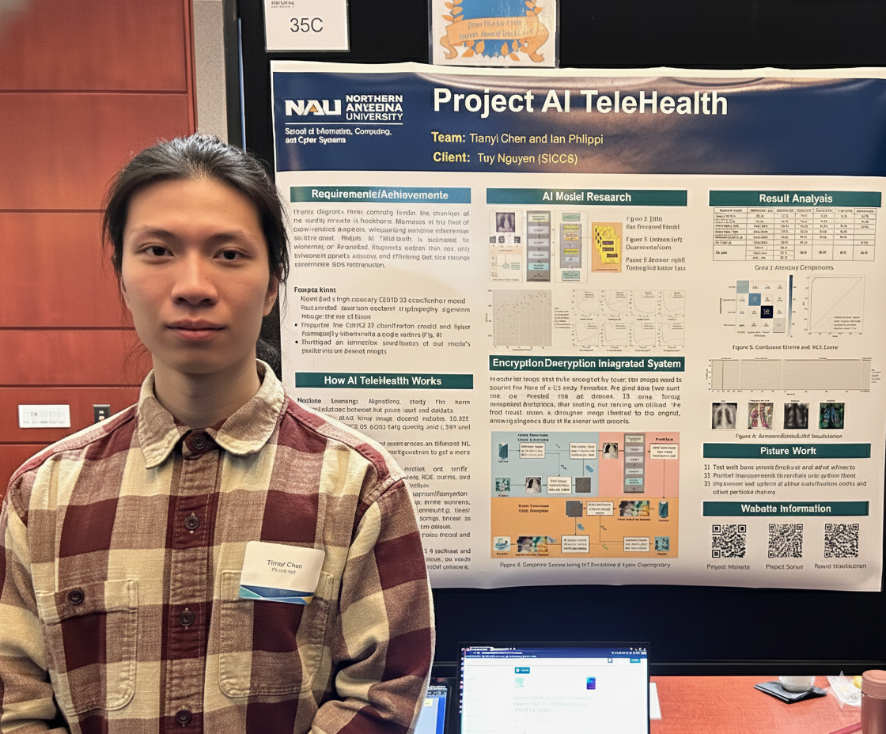
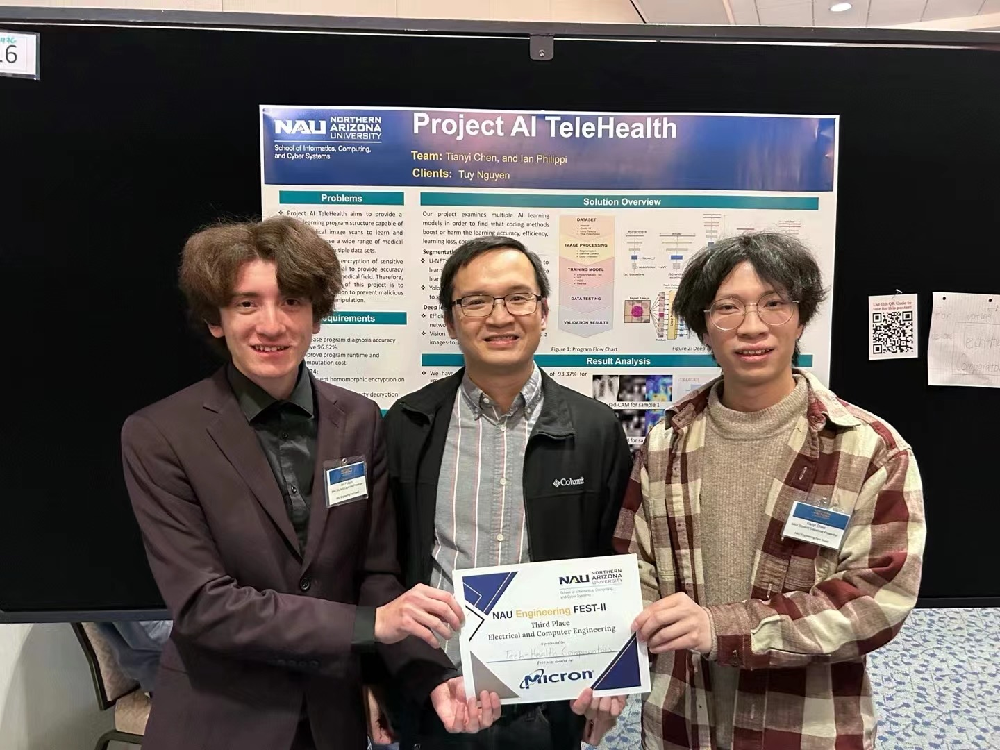

Tianyi (Bruce) Chen
Introduction:
My academic focuses currently fall on the optimization and applied AI. As an engineer, I always engage myself in the "new wine" and discovery. Therefore, my projects often go beyond my academic focuses into fields like softaware engineering, electrical engineering, and mechanical engineering. You can find the corresponded information in this page if interested.
I'm also interested in history and religion, from which I firmly believe that empathy, equality, mercy and forgiveness are the solution to human suffering. I'd like to talk with people from different places. Aside from Chinese, both English and Japanese (I got a D-level J.test certificate) are fine for me.
{kind=link}

Experienced Fields:
- AI/ML engineering & research: computer vision (projects: PEFT Swin Transformer through tensor decomposition, ai-telehealth system by ViT with kyber cryptography, computer vision models' research on covid-19 diagnosis, gradcam analysis), wireless communication system control with reinforcement learning, large language model (project: web chatbot with llama3.2), deep reinforcement learning, machine learning (project: machine learning results analysis)
- Linux OS manipulation: server hosting and distributed-data-parallel training (projects: a simple XAMPPP-based file system server (SpXFSS), live-streaming server, A pytorch based parallel training, etc)
- LateX writing: science journal on overleaf, academic documents writing
- Rust:A RUST built LLM server for one-time question answering by OpenAI-API
- Go:resume latex generator
- MATLAB in Control: control simulation with simulink (projects: PFL/TO & LQR pendubot upright swing-up)
- Full-stack Development: HTML, CSS, JavaScript (projects: personal site, school project) and PHP, Flask, SQL, XAMPP (projects: file system server on xampp, ai-telehealth service, flask server deployment at azure)
- R programming: data processing (project: animated2gradcam)
- C programming: IoT programming (project: remote watering)
- Verilog programming on FPGA: (project: fpga alarm platform with esp8266)
- Circuit board design
Publications: Google Scholar
Tianyi Chen, Ian Philippi, Quoc Bao Phan, Linh Nguyen, Ngoc Thang Bui, Carlo daCunha, and Tuy Tan Nguyen, "A Vision Transformer Machine Learning Model for COVID-19 Diagnosis Using Chest X-Ray Images," Healthcare Analytics, vol. 5, pp. 100332, Jun. 2024. (Journal Link)
Tianyi Chen, Ian Philippi, Quoc Bao Phan, et al. High-accuracy fine-tuned vision transformer model for diagnosing COVID-19 from chest X-ray images. TechRxiv. January 02, 2024. (Preprint)
Lab:
Collaborative Innovation Center for New Generation Information Network and Terminal at Chongqing University of Posts and Telecommunications
Project Experience: (Outdated)
Projects with computer vision, FPGA & IoTs. Click to expand the detail. (Stop updating at Sep, 2024, please check CV for latest info)
AI-Telehealth Part-II (2024, NAU, Senior, US)
Topic: Vision Transformer, Convolutional Neural Network, Post-Quantum Cryptography, Kyber, Visualization
Continuing Part I of the AI-Telehealth project, my paper was rejected by the Biosensors and Bioelectronics: X because of "Can't find reviewers (free of publication when we submitted)", which was frustrating to us. Later, Dr. Tuy searched for another Journal to publish. After several revisions, this article is officially accepted and published at https://doi.org/10.1016/j.health.2024.100332, where I served as the only first author. Also, after submiiting the revised article, I implemented the optimized model online to open the chest X-ray COVID-19 diagnosis service with 95.79% in four-class classification. At the same time, the other group member, Ian, and I work at applying the post-quantum kyber cryptography in image encryption and decryption, designing and simulating a local AI-Telehealth system, integrated with the optimized model.
I have to say, for a small number of classification (such as 4 in this research), the fine-tuning of hyperparameters and utilization of special methods to avoid bias is more important than searching for new models. Since our experiments show that each prodominant models demonstrates similar accuracy performance.
I use the Gemini-edited image of my presentation picture on the right, since my hair is too "feral" to look at. If you're curious about the original, it's here.
{kind=link}

AI-Telehealth Part-I (2023, NAU, Senior, US)
Topic: Image Classification, Vision Transformer
In this project, I write my first paper (preprint), which is about research in more accuracy and efficient computer vision model in classifying chest X-rays about COVID-19. Served as the leader of this project, my task is experimenting and training different pre-trained model structures with fine-tuning on training configurations and then modifying the hyperparameters and structures of the selected model, under the supervision and guidance of Dr. Tuy Nguyen and his Ph.D student Bao (in Digital Systems Design Laboratory). Our partial but excellent work made us win the third prize in the NAU EGR-FEST II presentation. If you're interested in this project, visit
here for more information.

FPGA Alarm System (2022, CQUPT, Junior, CN)
Topic: Embedded System, Internet of Things
This is the beginning of my project, which happens in a FPGA design race hold by an Intel Innovation Center of China authorized company. I lead team win the third prize. I am in charge of the whole designing, where my members write the documents and record presentations. As shown in the left, this simple designed system can count time using built-in clock, receive information from sensors (temperature and light), display the information on the website (through ESP8266 WiFi block), and alert with set conditions. For more information, please click here (blog).

Education:
| Place | Duration | Degree | Major | Status | GPA |
|---|---|---|---|---|---|
| University of California at Santa Barbara | Since Sep,2025 | Master's | Electrical and Computer Engineering | In Progress | 3.80/4 |
| Northern Arizona University | Aug,2023 - May,2024 | Bachelor of Science | Computer Engineering | Graduated | 3.97/4 |
| Chonqing University of Posts and Telecommunications | Sep,2020 - June,2023 | Eletronic Information Engineering | 3.14/4 | For more information about my Freshman-Junior projects (2020-2023), please visit previous personal site. |
Graduation Ceremony at NAU, 2024
Life:
Life in USA 2023 Aug - 2024 May, Northern Arizona University, BS
Life in USA 2025 Sep - Now, UC Santa Barbara, MS
Contact Info:
bruce.c.work.922@gmail.com(Work)
ty_bruce.chen@outlook.com
School Accounts: tianyi_chen@ucsb.edu
GitHub: https://github.com/TyBruceChen
LinkedIn: https://www.linkedin.com/in/tianyibrucechen/